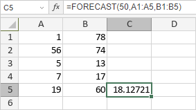

FORECAST funkcija
Funkcija FORECAST je jedna od statističkih funkcija. Koristi se za predviđanje buduće vrednosti na osnovu postojećih vrednosti.
Sintaksa
FORECAST(x, poznate_y, poznate_x)
Funkcija FORECAST ima sledeće argumente:
| Argument | Opis |
|---|---|
| x | X-vrednost koja se koristi za predviđanje y-vrednosti. |
| poznate_y | Zavisni opseg podataka. |
| poznate_x | Nezavisni opseg podataka sa istim brojem elemenata kao što sadrži poznate_y. |
Napomene
Kako primeniti funkciju FORECAST.
Primeri
Slika ispod prikazuje rezultat koji vraća funkcija FORECAST.
